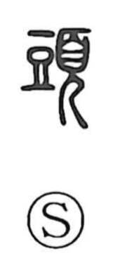

頭

Uncategorized
Kun: atama, kashira | On: tou, zu, to
head ・ chief ・ beginning
Explanation
頭 is a phono-semantic compound. The phonetic element 豆, originally depicting a high-footed ritual vessel, lends the on reading, and its upright shape also suggests a head set upon a straight neck. This is combined with 頁, the side view of a person wearing a ceremonial cap used in rites, and together they form the sense of head. Because the head is the highest part of the body, the character naturally extends to chief or leader, and by further abstraction to the beginning, as in expressions for the opening of a year or the start of a period.